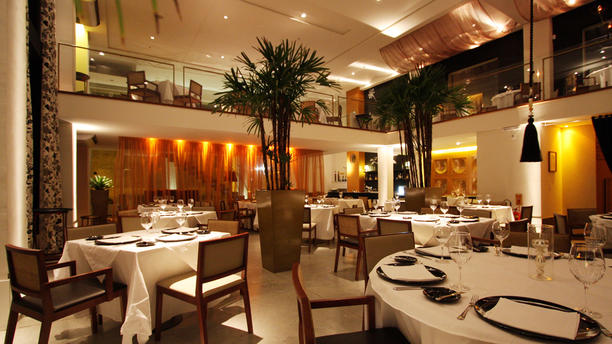

Quienes somos..?
Con más de 25 años de tradición, desde 1985, el éxito del restaurante Brisas del mar es la comida de mar, conjugando magistralmente los sabores nativos como corozo, mango, coco, maracuyá, níspero, siempre con el toque caribeño que lo ha caracterizado. Los mejores Pescados y mariscos frescos y recién llegados, preparados al momento, respetan la tradición popular. Sus recetas artesanales son las protagonistas, hasta el punto de especializarse en el arte de su preparación y presentación como: las ostras al natural, las muelas de cangrejo, los calamares en su tinta, la gran variedad de ceviches, su tradicional caldillo panameño y por supuesto, las langostas vivas con más de 20 preparaciones a degustar. Tradición Local, reconocido y visitado por personalidades nacionales e internacionales, manteniendose siempre en los primeros lugares de las redes sociales y especilizados en gastronómia.
CARLOS SARMIENTO P.

Estudió cocina en Argentina, en el Instituto Internacional de Artes Culinarias Mausi Sebess en Buenos Aires; inauguro nuestros restaurantes Brisas del Mar ubicados en Bogota y Cali de gastronomía nacional e internacional; que poco a poco fue trasformando en sabores más locales y recetas ancestrales del Pacífico.
FORMAS DE PAGO


ANDRES CORTES M.
Experto en vinos capacitado y bien informado, su trayectoria laboral de 13 años. Participa en todos los aspectos del servicio de vinos, desde el asesoramiento de los clientes para elegir los vinos que maridan mejor con su comida, hasta la compra y almacenamiento de nuestros vinos.